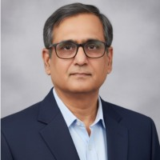

Cimulate
Live
An interactive cybersecurity learning platform featuring realistic scenarios across phishing, scam detection, incident investigation and security leadership decision-making.
CybersecurityInteractive SimulationsIncident Response

IT and Technology leader with 25+ years of experience leading enterprise IT operations, infrastructure, cloud platforms, technology transformation, cybersecurity governance and service delivery across global environments.
Experienced in managing global IT environments, aligning technology and security strategy with business objectives, modernising infrastructure, optimising costs and strengthening operational resilience.
A selection of platforms and executive dashboards built to address practical challenges in cybersecurity, career management and technology leadership.
Live
An interactive cybersecurity learning platform featuring realistic scenarios across phishing, scam detection, incident investigation and security leadership decision-making.
Published
A collection of executive dashboards translating IT operations, cybersecurity, ISO 27001 & GRC, and business resilience information into decision-support insights.
Live
A secure application for managing resumes, opportunities, contacts, job descriptions and career workflows, designed around structured processes and practical usability.
Enterprise IT operations, technology management, cloud and infrastructure, cybersecurity governance, risk management and business resilience.
Leading enterprise IT operations, infrastructure management, IT service delivery, ITIL practices and service availability across global environments.
Managing AWS, Azure, Microsoft 365, enterprise networks, servers and infrastructure modernisation to deliver reliable and scalable services.
Aligning technology investments with business priorities through transformation, procurement, vendor management, budgeting and cost optimisation.
Strengthening security operations through vulnerability management, incident response, SIEM, EDR/XDR, email security and security awareness.
Leading IT governance, risk management, third-party risk, IT audits and ISO/IEC 27001:2022 ISMS implementation and certification.
Establishing business continuity and disaster recovery practices that support service availability, operational resilience and recovery readiness.
Validated technical mastery and executive governance standards from elite global organizations.
ISACA
EC-Council
BSI / International Bodies
EC-Council
AXELOS
Professional Frameworks
IT and Technology leader with 25+ years of experience leading enterprise IT operations, infrastructure, cloud platforms, technology transformation, cybersecurity governance and service delivery across global environments. Experienced in managing IT environments supporting 170+ users across 7 global locations, with responsibility for enterprise infrastructure, AWS and Azure cloud platforms, Microsoft 365, networking, enterprise applications, technology investments, vendor management, business continuity and operational governance. Proven track record of aligning IT and security strategies with business objectives, modernising technology environments, optimising operational costs and maintaining high service availability. Led ISO/IEC 27001:2022 ISMS implementation and certification, strengthened enterprise security controls, and driven risk management, compliance and business resilience initiatives.
Leading enterprise IT, cybersecurity governance, and digital transformation initiatives that strengthened security, operational resilience, and business performance across global organizations.
Led global IT strategy, enterprise infrastructure, cybersecurity governance, and cloud transformation initiatives supporting worldwide business operations. Partnered with executive leadership to strengthen security, operational resilience, regulatory compliance, and technology-enabled business growth across global locations.
Governed multi-regional infrastructure operations supporting mission-critical cross-functional operations across India and the United States. Led cross-functional engineering teams to orchestrate large-scale capital transitions with minimized operational friction.
Commanded a critical infrastructure operational budget exceeding half a million dollars ($0.5M), optimizing security configurations and localized service desks across dense high-volume business centers.
The following recommendations are from colleagues at Toradex, where I spent more than 12 years leading global IT and cybersecurity initiatives. They represent perspectives from senior leaders, peers, and team members, reflecting the trust, collaboration, and business partnerships built during that journey.
"I hired Krishna more than 12 years ago, when I was responsible for IT at Toradex. I was able to hand him full ownership quickly, which took a large operational load off me. As my role at the company progressed, IT moved under another department lead, but I stayed close to the work until he left. Krishna owned IT infrastructure and operations, with a focus on cybersecurity, through a period of significant growth at the company. The environment moved from on-premises to hosted and then to a cloud-native mix of AWS and Microsoft Cloud, including business-critical customer-facing systems such as the website, e-commerce, and ERP. What mattered commercially is that the platform was built for reliability: it supported the company’s 24/7 operations with little downtime, and I do not recall a significant cybersecurity incident under his watch. He led a team of network engineers and IT support staff. He relied on that team for infrastructure execution and spent his own time managing, aligning, and communicating internally and externally. He travelled when a project required it and made himself available after hours and on weekends so maintenance did not interrupt the business. His last major project was the ISO/IEC 27001 certification which was a concrete step-up in how the company could demonstrate security and operational discipline to customers and partners. The outcome I cared about was I could trust him with the function. He took IT off my plate, scaled it with the company, and kept the business running. Any organization looking for an IT and cybersecurity leader who delivers stable operations and stays aligned with the business should talk to him."
"I enjoyed working with Krishna. He took my concerns seriously, kept communication clear, and addressed issues quickly and reliably. Collaborating with him was straightforward, and I always knew where things stood."
"I had the pleasure of working alongside Krishna for 12 years at Toradex. Throughout this time, Krishna consistently provided great support to me and my teams. His focus on quick support extended to his entire team. He was instrumental in building and shaping our IT infrastructure. Krishna’s collaborative spirit and technical knowledge made a significant impact. I recommend him to any team looking for a committed and passionate IT professional."
"I had the privilege of working with Krishna for over 10 years, during which he consistently demonstrated excellent leadership and deep expertise in IT management. With more than 20 years of industry experience, Krishna effectively managed complex IT environments with a strong focus on security. He led initiatives to improve security awareness and ensure compliance with ISO standards and industry best practices. His ability to explain technical concepts clearly while balancing security and business needs was exceptional. I am confident Krishna will bring the same expertise and dedication to his next role."
"I had the pleasure of working with Krishna for over 12 years, collaborating across various roles and projects. Throughout this time, he consistently stood out as an exceptional IT Operations leader—goal-oriented, solution-driven, and always pragmatic in his approach. What I admire most about Krishna is his ability to stay focused on what truly matters while keeping the team motivated and aligned. He is a true team player who brings out the best in those around him. I highly recommend Krishna to any organization looking for a strong and reliable IT Operations leader."
"I worked with Krishna while reporting to him as an IT Systems Engineer, and during that time I appreciated his structured and disciplined approach to IT operations. He consistently emphasized process adherence, budget awareness, and accountability, bringing clarity to IT decision-making and asset management. His focus on cost control and compliance ensured that IT operations aligned closely with organizational policies and long-term planning. As a manager, he set clear expectations and encouraged the team to work in a methodical and results-oriented manner. Working under his leadership strengthened my understanding of enterprise IT support, operational efficiency, and professional responsibility. I believe his experience in managing IT environments and maintaining operational discipline would be valuable to any organization seeking a detail-oriented and structured IT leader."
"I had the pleasure of working with Krishna during his time as Head of IT at Toradex. Krishna stands out as a leader who combines strong technical expertise with genuine empathy and trust. He fosters collaboration, encourages growth, and leads with integrity, creating an environment where people truly enjoy doing their best work."
Looking for an experienced IT and cybersecurity leader to lead enterprise technology operations, strengthen governance, improve operational resilience or drive technology transformation? Let's connect.